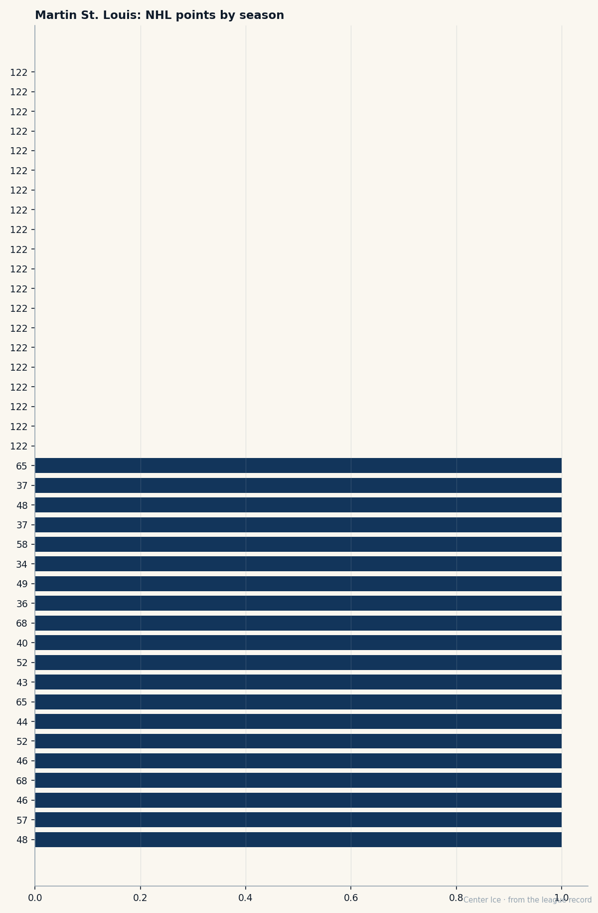
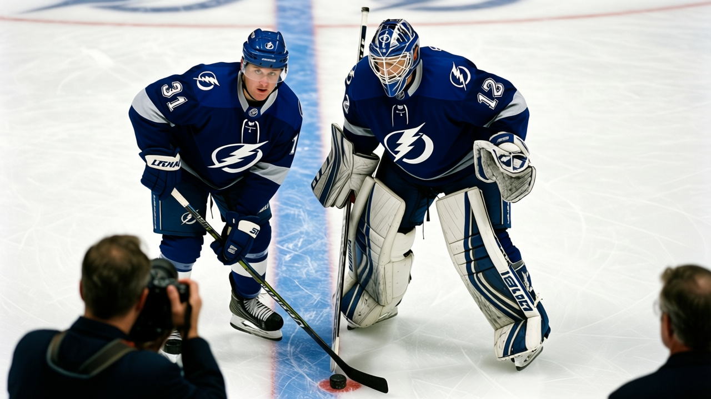

Undrafted, Unselected, and the Fastest Player on the Fourth-Best Team in the League
Martin St. Louis is 33, scoring at a 136 pace on $1.30M, and his contract has no years left
 Carol BinghamFeatures writer · Rinkside
Carol BinghamFeatures writer · Rinkside Martin St. Louis85 will be an unrestricted free agent this summer. He is 33. He is scoring at a 136 pace. He makes $1.30M.
Martin St. Louis85 will be an unrestricted free agent this summer. He is 33. He is scoring at a 136 pace. He makes $1.30M.
That pace belongs on a $7M contract. It belongs to the players who were first-round picks, the ones who walked into a room at 19 with a club's plan already drawn around them. St. Louis was not drafted by any team. He played college hockey at Vermont, earned all-decade honours in the ECAC, and when the offers came in the summer of 1996, nobody gave him a second look. The Ottawa Senators offered a tryout in 1997. They released him. He signed with the Cleveland Lumberjacks of the IHL. He had 50 points in 56 games there, which was enough to get a contract with the Calgary Flames in February 1998. They sent him to the AHL.
He played 13 games for Calgary in 1998-99, mostly sitting in the press box. He played 56 games the next year and scored 18 points. The Flames' general manager, Al Coates, picked up his contract option. Then Coates was fired. The new management had no use for a 28-year-old winger with 69 career NHL games. They exposed him in the 2000 Expansion Draft. Nobody selected him. The club bought out his contract and made him an unrestricted free agent.
Tampa Bay picked him up. He made his debut on October 6, 2000. That was four and a half seasons ago, and he is still there.
What he is at 33
The Book has him at 85. The Development Index reads 0: steady, neither climbing nor fading. His speed grade is 94 and his acceleration is 94. His fight grade is 50 and his injury resistance is 50. He doesn't survive contact because he's never where the contact is.
At 33, most wingers in this league are losing a step or two. St. Louis is still the second-fastest player on his own roster.  Vincent Lecavalier88 grades 95 speed, and nobody else on
Vincent Lecavalier88 grades 95 speed, and nobody else on  Tampa Bay Lightning is above 88. The room runs on feet. When the play opens up, Lecavalier and St. Louis are already there before the other team's defencemen turn around.
Tampa Bay Lightning is above 88. The room runs on feet. When the play opens up, Lecavalier and St. Louis are already there before the other team's defencemen turn around.
He has 28 goals and 40 assists in 41 games. That is a 136 pace over 82. He is 20th in the league in points. The man ahead of him is  Mario Lemieux85 at 71, playing at 39, on pace for 162. The man behind him is
Mario Lemieux85 at 71, playing at 39, on pace for 162. The man behind him is  Mike Comrie78 at 67 in 42 games. St. Louis sits between a legend in his last act and a 24-year-old in his prime, and he makes less than both of them.
Mike Comrie78 at 67 in 42 games. St. Louis sits between a legend in his last act and a 24-year-old in his prime, and he makes less than both of them.

Last season he scored 122 points in 82 games. It was the year he proved the ceiling was higher than anyone had written down. This year he is tracking above it: 68 in 41 puts him on a pace of 136, well past last season's 122.
What the team is
Tampa Bay Lightning has 57 points in 41 games. They are fourth in the league, two points behind  Dallas Stars and
Dallas Stars and  Nashville Predators and 14 behind
Nashville Predators and 14 behind  Toronto Maple Leafs. Their last ten games read WWWWWWWLLOTL. They have the fourth-most wins in the league at 23.
Toronto Maple Leafs. Their last ten games read WWWWWWWLLOTL. They have the fourth-most wins in the league at 23.
 Nikolai Khabibulin90 is in net with 22 wins and a 3.14 goals-against. He grades 90. Lecavalier grades 88 and carries a 162 pace of his own.
Nikolai Khabibulin90 is in net with 22 wins and a 3.14 goals-against. He grades 90. Lecavalier grades 88 and carries a 162 pace of his own.  Cory Stillman82 has 67 points at 31, making him the third man on this roster with more than 60. The team is not a one-man show. It is built around speed up the middle and around a goaltender who grades 90 on a seventh-round pick's history.
Cory Stillman82 has 67 points at 31, making him the third man on this roster with more than 60. The team is not a one-man show. It is built around speed up the middle and around a goaltender who grades 90 on a seventh-round pick's history.
But St. Louis is the one nobody priced. $1.30M for a 136-pace winger at 33. The players who run a pace of 150 or above this season are on long-term deals or years younger. He is neither.

The road into the room
What stays with me about the St. Louis story is how patient it was. The underdog angle is there, but patience is what gets to me. He was 28 when Tampa Bay took him. In this league, 28 is the age when you find out who you are. The prospects are either playing or they are not. The contracts are either going up or they are finished.
He had 69 NHL games by the time he landed in Tampa. That is not a late start. That is barely a start. Most second-round picks have played three full seasons by then. St. Louis had 18 points in a full year and a bought-out contract and no team that wanted him.
He walked into Tampa Bay and never left. Four and a half seasons later, he is 33 with 100 morale in the Bureau's Scale, the fastest player on a team that has won 23 games in 41. His contract expires in six months and he will be 33 in August. The question the market will have to answer is whether a man who was unselected at 28, undrafted at 22, and cut at 26 can now command what his feet are worth.
The Development Index reads 0. The speed grades say the feet are there. At 136 he is playing the best hockey of his life at an age when most of his peers are managing. And the $1.30M says the league looked at all of that and blinked.
He was passed over for a provincial team at a midget tournament in Laval despite leading his league in scoring. He played 31 games of junior hockey in the CJHL, scored 87 points, and left for college. Nobody in the organization that drafted him, because no organization drafted him, ever thought he would score 68 points in 41 games at 33 on a team that is one loss from third place in the league.
The feet are still there. The room knows it. The contract does not yet.